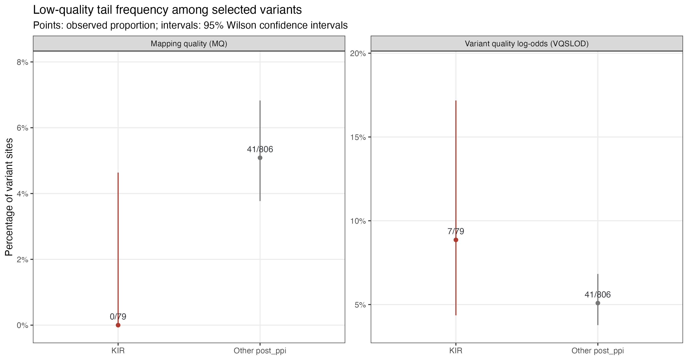
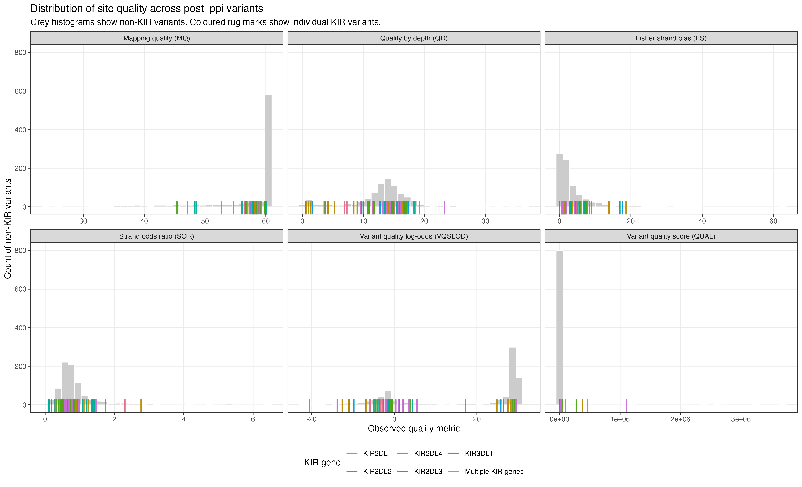
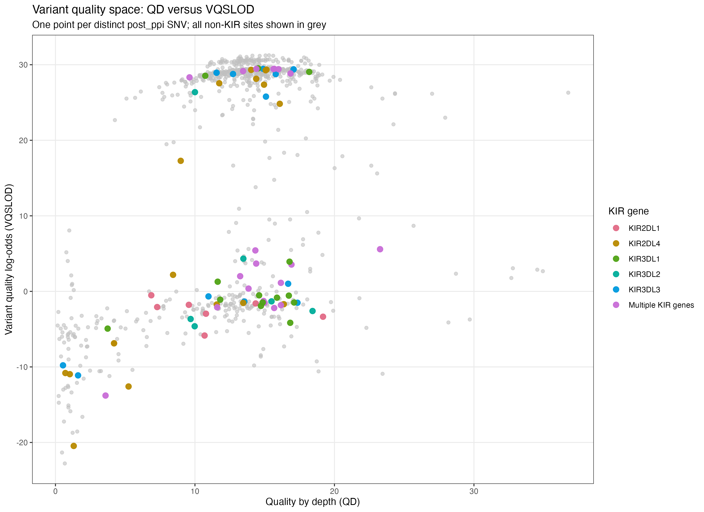
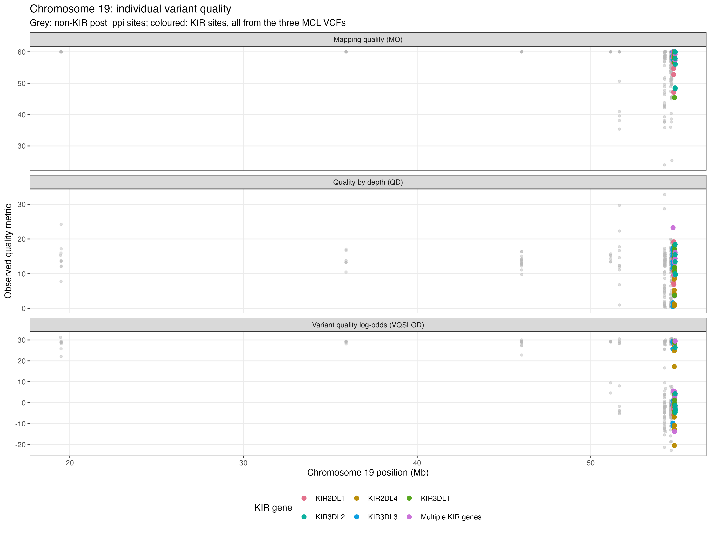
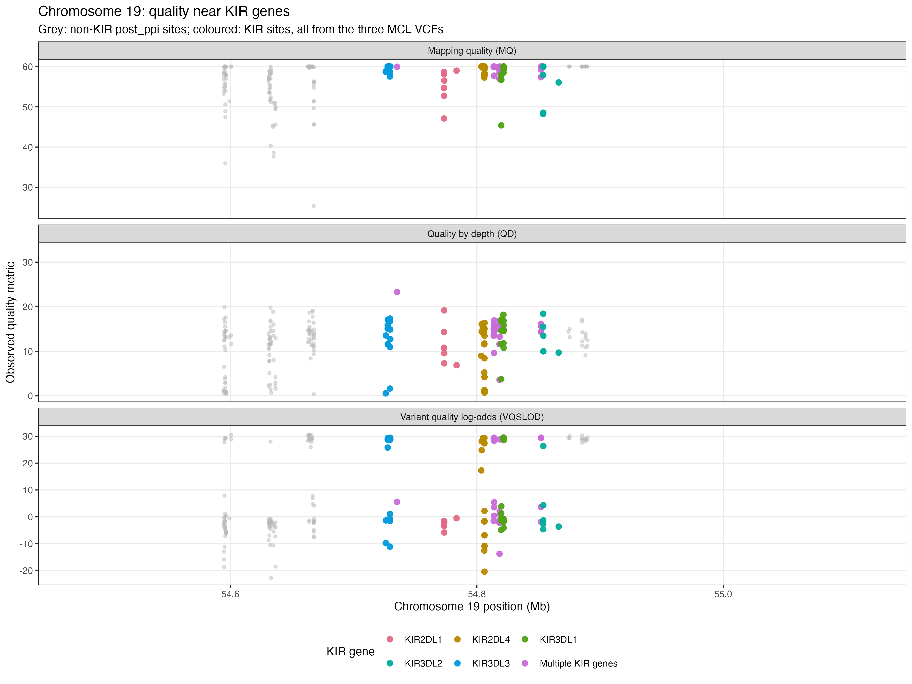
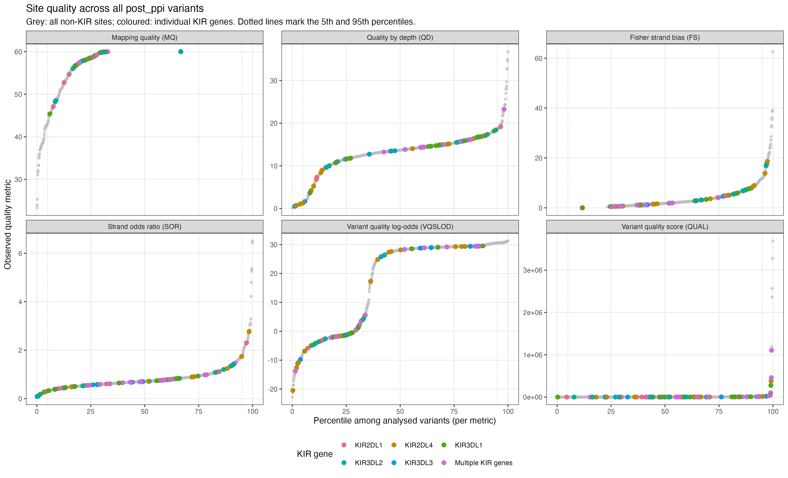
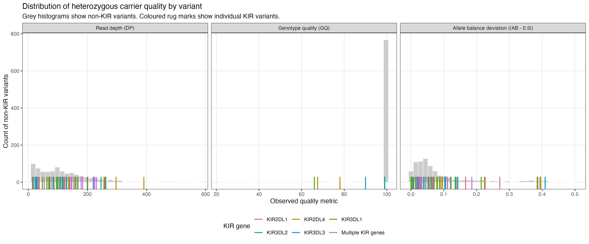
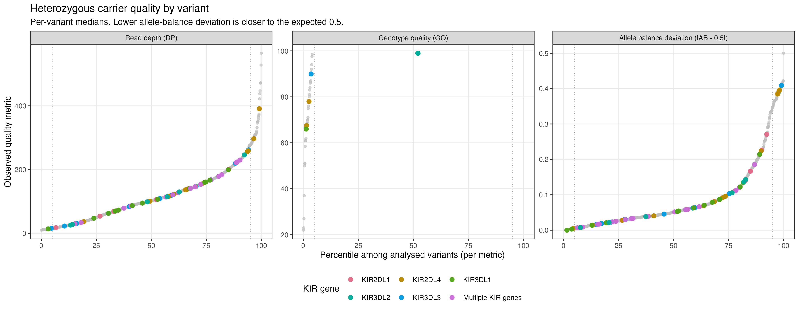
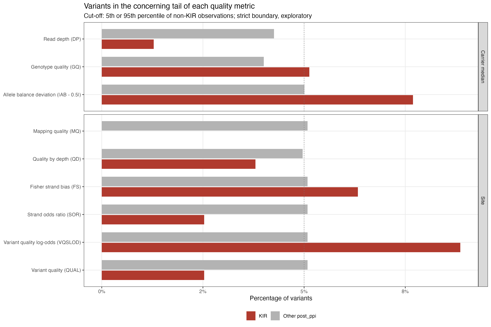

Exploratory post-filtering QC assessment | MCL_22, MCL_586 and MCL_836 | 79 KIR and 806 other distinct SNVs
Our genome-wide analysis identified enrichment of rare variants in disease-associated infection-response pathways that included several KIR genes. Because KIR genes exhibit extensive sequence homology and copy-number variation, we considered whether read-mapping or variant-calling artefacts could have contributed to these findings. We therefore performed a post-hoc quality assessment of 79 KIR-annotated SNVs against 806 other retained SNVs from the same three MCL extracts.
Conclusion. The post-hoc comparison found no consistent evidence of poorer quality among the retained KIR calls. Quality by depth (median 14.35 versus 13.66), strand-bias metrics, genotype quality (median 99.00 versus 99.00) and heterozygous allele-balance deviation (0.06 versus 0.05) were broadly comparable; KIR calls had higher median read depth and QUAL scores. Median mapping quality was slightly lower (59.27 versus 60.00), but 0/79 KIR sites versus 41/806 other sites fell below the comparator's fifth-percentile MQ threshold. VQSLOD, GATK's model-derived recalibration score, was markedly lower (median -0.52 versus 28.34) and differed significantly between groups; however, the proportion in the lowest VQSLOD tail was not significantly different in this exploratory test (8.9% versus 5.1%). The available metrics do not indicate a general QC failure that would justify excluding KIR variants or changing the pipeline's existing QC criteria. The VQSLOD shift warrants attention, and these selected calls cannot independently validate mapping accuracy or detection sensitivity in the KIR region.
| Question | Observation | Assessment |
|---|---|---|
| Are KIR sites overrepresented in the low-MQ tail? | 0/79 versus 41/806 below MQ 42.78 | No observed low-MQ KIR sites; uncertainty remains |
| Are KIR sites overrepresented in the low-VQSLOD tail? | 7/79 versus 41/806 below VQSLOD -7.22 | Higher observed KIR fraction, with a wide confidence interval |
| Do the whole-score distributions differ? | MQ 59.27 vs 60.00; VQSLOD -0.52 vs 28.34 | Both MQ and VQSLOD show distributional shifts |
| Are the other observed QC measures consistently worse? | QD 14.35 vs 13.66; GQ 99.00 vs 99.00; |AB - 0.5| 0.06 vs 0.05 | No consistent deterioration across these selected calls |
Median mapping quality was 59.27 in KIR versus 60.00 in other sites (Wilcoxon BH-adjusted p < 0.0001). None of 79 KIR sites fell below the other variants' fifth-percentile MQ cut-off (42.78), versus 41/806 non-KIR sites. The absolute difference in low-MQ frequency was -5.1 pp [-6.8 pp, -0.3 pp] (Newcombe 95% CI; KIR minus non-KIR). The exploratory Fisher test gave p = 0.043 (two-test BH-adjusted p = 0.087). The observed zero does not imply that mapping errors are absent.
VQSLOD is a model-derived GATK recalibration score combining several quality annotations; a negative value may still pass a VQSR tranche threshold and does not, by itself, establish an erroneous variant call. VQSLOD was lower in KIR (median -0.52 versus 28.34; Wilcoxon BH-adjusted p < 0.0001). At the other variants' fifth-percentile VQSLOD cut-off (-7.22), 7/79 KIR variants (8.9%) and 41/806 other variants (5.1%) were in the low-score tail. The absolute difference was 3.8 pp [-1.1 pp, 12.2 pp]; exploratory Fisher p = 0.186. A shift in this recalibration score does not identify individual mapping errors.
Quality by depth (median 14.35 versus 13.66), per-variant median heterozygous-carrier read depth (122.25 versus 100.00), median genotype quality (99.00 versus 99.00) and median absolute heterozygous allele-balance deviation (0.06 versus 0.05) did not show a consistent pattern of poor KIR quality. FS and SOR showed no significant differences after the nine-metric BH correction. Variant QUAL was higher in KIR (2325.57 versus 1792.64), but QUAL is not independent evidence of correct mapping. GQ values of 99 may be capped.
The original concern concerns an excess of low-quality KIR calls. For this question, the frequency of observations in the concerning tail is more interpretable than comparing medians alone. These are relative cut-offs derived from the non-KIR sample, not established mapping-failure thresholds.

| Metric | Non-KIR fifth-percentile cut-off | KIR below cut-off | Other below cut-off | Difference [95% CI] | Fisher p | BH-adjusted p |
|---|---|---|---|---|---|---|
| Mapping quality (MQ) | 42.78 | 0/79 (0.0%) | 41/806 (5.1%) | -5.1 pp [-6.8 pp, -0.3 pp] | 0.043 | 0.087 |
| Variant quality log-odds (VQSLOD) | -7.22 | 7/79 (8.9%) | 41/806 (5.1%) | 3.8 pp [-1.1 pp, 12.2 pp] | 0.19 | 0.19 |
Risk differences are KIR minus other variants in percentage points, with 95% Newcombe score confidence intervals. Fisher tests are two-sided; BH correction covers these two exploratory tail comparisons only. The threshold was estimated using the same non-KIR sample being tested, so the nominal p-values should not be interpreted as confirmatory error rates.
The complete distributions distinguish shifts affecting many variants from a small number of particularly low-scoring observations. KIR genes are coloured individually; non-KIR variants appear in grey.







Distinct variant sites:
| region | n_sites | pass_fraction | median_MQ | median_QD | median_VQSLOD |
|---|---|---|---|---|---|
| Other post_ppi | 806 | 1 | 60 | 13.665 | 28.345 |
| KIR | 79 | 1 | 59.27 | 14.35 | -0.5161 |
Heterozygous genotype observations (not independent for inference):
| region | n_heterozygous_calls | median_DP | median_GQ | median_AB_deviation | fraction_AB_30_70 |
|---|---|---|---|---|---|
| Other post_ppi | 1771 | 103 | 99 | 0.057047 | 0.823828345567476 |
| KIR | 221 | 120 | 99 | 0.06422 | 0.778280542986425 |
Site-level analyses use distinct SNVs. Carrier-level analyses use one median heterozygous genotype per distinct SNV. Two-sided Wilcoxon rank-sum tests were adjusted together across 9 metrics using Benjamini-Hochberg. The confidence interval is for the difference in medians (KIR minus other) from 1,500 variant-level bootstrap resamples. Cliff's delta measures relative rank separation; it is not a variant-failure probability.
| Group | Metric | n KIR | n other | Median KIR | Median other | Median difference [95% CI] | Cliff's delta | BH-adjusted p |
|---|---|---|---|---|---|---|---|---|
| Site | Mapping quality (MQ) | 79 | 806 | 59.27 | 60.00 | -0.73 [-1.40, -0.04] | -0.26 | <1e-04 |
| Site | Quality by depth (QD) | 79 | 806 | 14.35 | 13.66 | 0.69 [-0.50, 1.29] | 0.02 | 0.92 |
| Site | Fisher strand bias (FS) | 79 | 806 | 1.49 | 1.76 | -0.27 [-0.72, 1.33] | 0.02 | 0.92 |
| Site | Strand odds ratio (SOR) | 79 | 806 | 0.74 | 0.71 | 0.04 [-0.03, 0.08] | -0.00 | 0.99 |
| Site | Variant quality log-odds (VQSLOD) | 79 | 806 | -0.52 | 28.34 | -28.86 [-29.76, -24.36] | -0.32 | <1e-04 |
| Site | Variant quality (QUAL) | 79 | 806 | 2325.57 | 1792.64 | 532.93 [132.11, 1026.95] | 0.22 | 0.0031 |
| Carrier median | Read depth (DP) | 78 | 799 | 122.25 | 100.00 | 22.25 [4.50, 41.00] | 0.15 | 0.077 |
| Carrier median | Genotype quality (GQ) | 78 | 799 | 99.00 | 99.00 | 0.00 [0.00, 0.00] | -0.01 | 0.92 |
| Carrier median | Allele balance deviation (|AB - 0.5|) | 78 | 799 | 0.06 | 0.05 | 0.01 [-0.01, 0.03] | 0.04 | 0.92 |
For each metric, the concerning direction was defined as below the fifth percentile (MQ, QD, VQSLOD, QUAL, DP and GQ) or above the 95th percentile (FS, SOR and allele-balance deviation) of the non-KIR values. Ties and strict inequalities can change the baseline fraction from exactly 5%.

| Group | Metric | Concerning direction | Region | Count in tail | Percentage | Reference cut-off |
|---|---|---|---|---|---|---|
| Site | Mapping quality (MQ) | low | Other post_ppi | 41/806 | 5.1% | 42.78 |
| Site | Mapping quality (MQ) | low | KIR | 0/79 | 0.0% | 42.78 |
| Site | Quality by depth (QD) | low | Other post_ppi | 40/806 | 5.0% | 1.31 |
| Site | Quality by depth (QD) | low | KIR | 3/79 | 3.8% | 1.31 |
| Site | Fisher strand bias (FS) | high | Other post_ppi | 41/806 | 5.1% | 11.71 |
| Site | Fisher strand bias (FS) | high | KIR | 5/79 | 6.3% | 11.71 |
| Site | Strand odds ratio (SOR) | high | Other post_ppi | 41/806 | 5.1% | 1.76 |
| Site | Strand odds ratio (SOR) | high | KIR | 2/79 | 2.5% | 1.76 |
| Site | Variant quality log-odds (VQSLOD) | low | Other post_ppi | 41/806 | 5.1% | -7.22 |
| Site | Variant quality log-odds (VQSLOD) | low | KIR | 7/79 | 8.9% | -7.22 |
| Site | Variant quality (QUAL) | low | Other post_ppi | 41/806 | 5.1% | 200.15 |
| Site | Variant quality (QUAL) | low | KIR | 2/79 | 2.5% | 200.15 |
| Carrier median | Read depth (DP) | low | Other post_ppi | 34/799 | 4.3% | 16.00 |
| Carrier median | Read depth (DP) | low | KIR | 1/78 | 1.3% | 16.00 |
| Carrier median | Genotype quality (GQ) | low | Other post_ppi | 32/799 | 4.0% | 99.00 |
| Carrier median | Genotype quality (GQ) | low | KIR | 4/78 | 5.1% | 99.00 |
| Carrier median | Allele balance deviation (|AB - 0.5|) | high | Other post_ppi | 40/799 | 5.0% | 0.34 |
| Carrier median | Allele balance deviation (|AB - 0.5|) | high | KIR | 6/78 | 7.7% | 0.34 |
Sites annotated to several KIR genes form a separate group, rather than being assigned arbitrarily.
| Gene | Sites | Median MQ | Median QD | Median VQSLOD |
|---|---|---|---|---|
| KIR2DL1 | 7 | 56.51 | 10.69 | -2.08 |
| KIR3DL2 | 6 | 56.97 | 11.73 | -1.96 |
| KIR3DL1 | 14 | 58.80 | 14.79 | -0.70 |
| KIR2DL4 | 18 | 59.82 | 11.65 | 0.33 |
| Multiple KIR genes | 20 | 59.96 | 14.95 | 3.62 |
| KIR3DL3 | 14 | 60.00 | 14.21 | 27.27 |
AF and AC may confound comparison of the quality distributions but are not themselves measurements of read quality.
| region | n_AF_available | median_AF | median_AC |
|---|---|---|---|
| Other post_ppi | 806 | 0.0005325 | 1 |
| KIR | 79 | 0.0005405 | 1 |
Selected variants. Only biallelic SNVs present in the three downstream MCL extracts are assessed. The complete chromosome 19 call set, non-PASS variants, missing calls and false negatives are not represented. All retained sites had FILTER=PASS, which cannot discriminate within this selected set.
Genomic structure. KIR paralogy, copy-number variation, reference representation and read placement can produce confident but incorrect alignments. The available VCF metrics cannot independently establish mapping correctness. Nearby variants may not be statistically independent, so site-resampling intervals and rank tests may underestimate uncertainty.
Recalibration. VQSLOD is dependent on the original VQSR training model and annotations; neither its negative sign nor the empirical fifth-percentile cut-off automatically identifies a false positive. The model, culprit annotations and BAM/CRAM evidence were not analysed. QUAL, GQ and DP are not independent confirmations of correct gene assignment.
Inference. Non-significant tests do not prove equivalence. These tail thresholds and analyses are exploratory, and the variants are not a random sample of all callable exome sites. Genomic region and allele-frequency composition may differ between groups. A confirmatory QC claim would require independent validation or a pre-specified, externally justified QC threshold.
Supporting TSV outputs: ../../data/variant_qual. Figures and report: ../../images/variant_qual.